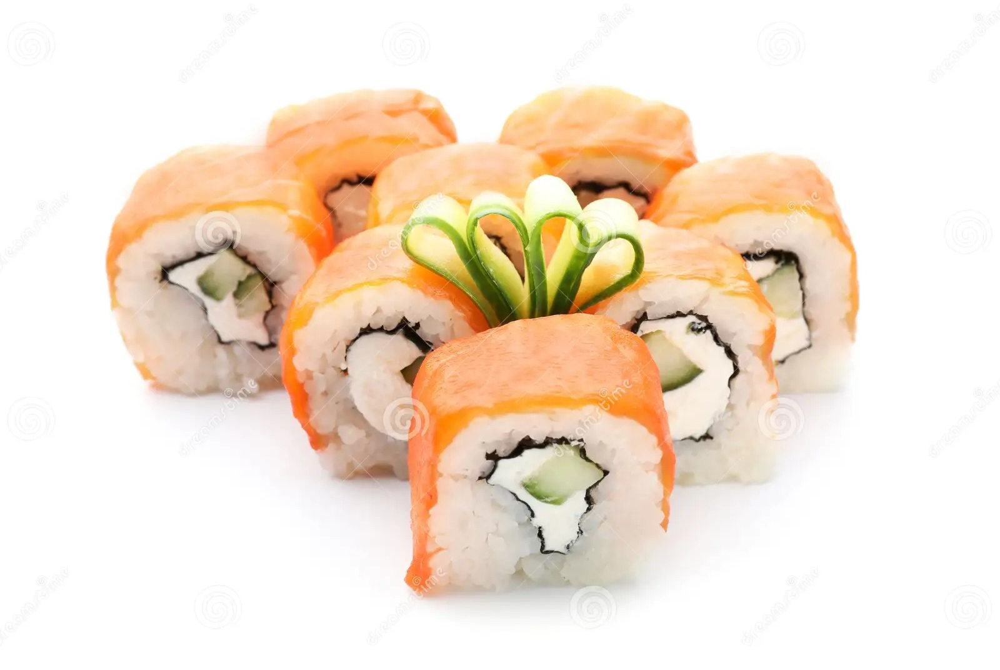
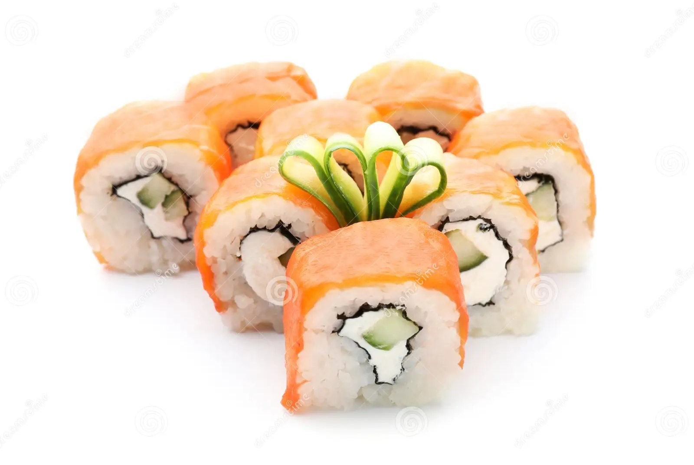

DRIKS CLÁSSICOS
"BEST DRINKS I'VE EVER TASTED. – Lady Gaga
Saké: Um clássico japonês, o saké é um tipo de vinho de arroz que pode ser servido quente ou frio, dependendo da preferência e do tipo de saké.
Saké Martini: Uma variação do clássico martini, substituindo o gin ou vodka por saké. Pode ser seco ou doce, dependendo dos ingredientes adicionados.
Choya Umeshu: Um licor de ameixa japonês, conhecido por seu sabor doce e frutado. Pode ser servido puro com gelo ou misturado em coquetéis.
Hojicha Highball: Feito com chá hojicha, um chá japonês torrado, e whisky japonês. É uma opção refrescante e leve para acompanhar sushi.
Shochu Tonic: Shochu é um destilado japonês leve e pode ser misturado com água tônica e uma fatia de limão para um coquetel simples e refrescante.
Plum Sake Spritzer: Uma mistura de saké de ameixa com club soda e um toque de limão, servido com gelo. É uma opção leve e refrescante.
Japanese Whisky Old Fashioned: Feito com whisky japonês, açúcar, angostura bitters e uma fatia de laranja. É um coquetel clássico e robusto que complementa bem pratos de sushi.
Saiba Mais


 
